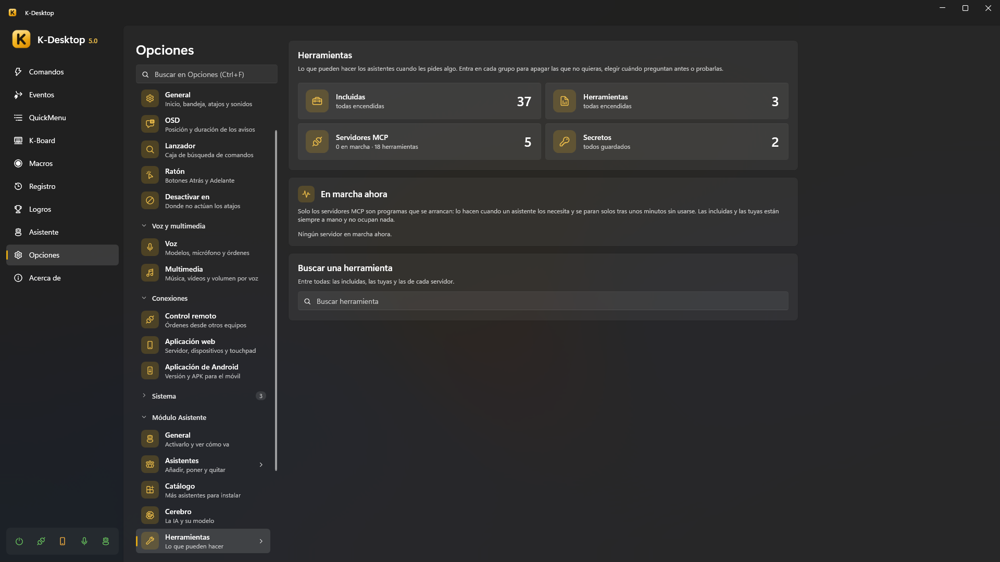
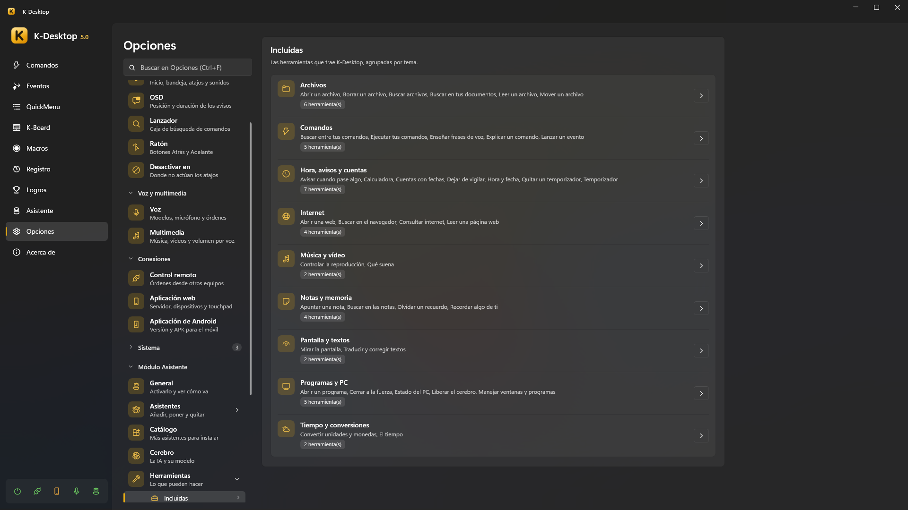
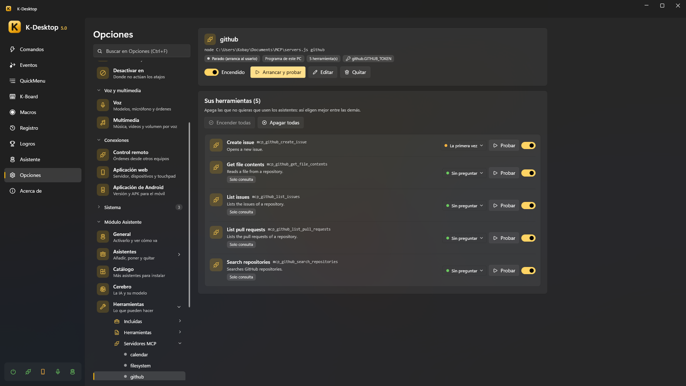

Herramientas
Las herramientas son lo que los asistentes pueden hacer cuando les pides algo: poner un temporizador, buscar un archivo, leer una web, cerrar un programa… En cada orden solo le llegan a la IA las pocas herramientas que vienen a cuento, así elige bien aunque haya cientos.
Opciones → Asistente → Herramientas las enseña todas —las incluidas, las tuyas y las de cada servidor MCP— con un buscador. Abre cada grupo para apagar las que no quieras, elegir cuándo pregunta antes de hacerlo (Sin preguntar, La primera vez, Siempre) o Probarla con un pequeño formulario.

Todo lo que hace un asistente sale en Panel → Asistente → Actividad (la suya, o la de todos con Todos): qué, cómo (regla, comando, IA, memoria…) y si funcionó. Lo que se puede deshacer tiene su botón Deshacer (o di «deshaz eso»).
Las incluidas

| Tema | Herramientas | Por ejemplo |
|---|---|---|
| Comandos | Ejecutar tus comandos · Buscar entre tus comandos · Explicar un comando · Revisar un comando o evento · Mirar el registro · Ver tus estadísticas · Enseñar frases de voz · Lanzar un evento · Crear un evento · Parar una cuenta atrás | «pon el modo juego», «cuando abra Steam pon el modo juego», «¿qué hace el comando de las copias?», «¿por qué no saltó el evento de las ocho?», «¿qué falló ayer?», «¿qué comando uso más?», «cuando diga la peli abre el comando de películas», «al final no apagues el ordenador» |
| Hora, avisos y cuentas | Hora y fecha · Temporizador · Quitar un temporizador · Programar una orden · Ver lo pendiente · Quitar algo programado · Avisar cuando pase algo · Dejar de vigilar · Cuentas con fechas · Calculadora | «avísame en media hora», «a las siete vacía la papelera», «avísame cuando termine la descarga», «cuántos días faltan para navidad» |
| Notas y memoria | Apuntar una nota · Buscar en las notas · Cambiar una nota · Borrar una nota · Recordar algo de ti · Olvidar un recuerdo | «apunta que tengo que comprar leche», «recuerda que mi jefe se llama Luis» |
| Archivos | Buscar archivos · Abrir un archivo · Leer un archivo · Pasar un audio a texto · Borrar un archivo · Mover un archivo · Escribir un documento · Copiar un archivo · Crear una carpeta · Comprimir en ZIP · Descomprimir un ZIP · Buscar en tus documentos | «búscame el pdf de la factura de la luz», «abre lo último que descargué» |
| Internet | Abrir una web · Buscar en el navegador · Consultar internet · Leer una página web · Comprobar la red · Mandar al móvil | «cuánto cuesta una RTX 5080», «resúmeme esta página», «¿hay internet?», «¿responde el NAS?», «mándame esta dirección al móvil» |
| Pantalla y textos | Mirar la pantalla · Traducir y corregir textos · Leer lo copiado · Buscar en lo copiado antes · Copiar un texto | «qué error me sale», «tradúceme esto al inglés», «¿qué tengo copiado?», «busca el enlace que copié esta mañana», «cópiame el teléfono del fontanero» |
| Programas y PC | Abrir un programa · Manejar ventanas y programas · Ver las ventanas abiertas · Colocar varias ventanas · Cerrar a la fuerza · Estado del PC · Liberar el cerebro · Cambiar el volumen · Cambiar el dispositivo de audio · Pantalla · Modo claro u oscuro · Wi-Fi y Bluetooth · Bloquear el PC · Apagar o reiniciar · Hacer una captura · Plan de energía · Mantener despierto | «minimiza Steam», «pon el navegador y VS Code uno al lado del otro», «pon el volumen al 30», «pon el modo oscuro», «bloquea el PC», «Chrome no responde, ciérralo a la fuerza», «por qué va lento el ordenador» |
| Música y vídeo | Qué suena · Controlar la reproducción | «qué canción es esta», «pausa el vídeo» |
| Tiempo y conversiones | El tiempo · Convertir unidades y monedas | «va a llover mañana», «cuánto son 50 dólares en euros» |
Algunos detalles:
- Avisar cuando pase algo vigila que se cierre un programa o aparezca una ventana, que se calmen el procesador o la gráfica, que acabe una descarga o que una carpeta deje de cambiar. Cuando pasa, lo dice el asistente que lo puso y, si se lo pides («avísame en el móvil…»), también te llega al móvil.
- Mandar al móvil manda un texto, un enlace o un archivo pequeño a tus dispositivos emparejados (todos, o el que nombres). Pregunta la primera vez, según Preguntar antes de hacer algo.
- El calendario, el correo y Telegram tienen sus propias herramientas (mirar y cambiar la agenda, leer y mandar correos, escribir y leer Telegram): ver Calendario, Correo y Telegram.
- Crear un evento: «cuando abra Steam pon el modo juego», «si dejo el PC 10 minutos sin tocar, bloquéalo», «cada vez que conecte los cascos dime su batería», «cuando llegue un pdf a Descargas, avísame». Hace un evento de cualquier tipo (una hora, un programa que se abre o pasa delante, el PC sin tocar, bloqueado o al despertar, un archivo en una carpeta, un pendrive, unos cascos, un mando o una pantalla, la red, la batería o el procesador por encima o por debajo de un %, amanecer o atardecer, al iniciar K-Desktop…) y lo guarda ya: ejecuta tus comandos (también al terminar, como cuando cierras el programa) o le pide algo al asistente, con un «Solo si» de horas, días o un programa abierto si se lo dices. Pregunta como lo más arriesgado que hará (tus comandos, una vez), dice qué ha creado, sale en Eventos marcado con el asistente que lo hizo, y «deshaz» lo quita.
- Programar una orden: «a las 19:00 mira el tiempo, mándamelo por Telegram y apaga el ordenador», «mañana a las 9…», «todos los días a las 8…». Se guarda como un evento que a su hora le pide la orden al asistente como si se la dijeras en ese momento. Lo que hará falta se aprueba al pedírselo (pregunta una vez, por lo más arriesgado, según Preguntar antes de hacer algo); a su hora no pregunta nada: hace lo aprobado, lo que no necesita permiso, y lo demás no. Apagar o reiniciar, siempre lo último, y al acabar dice qué salió y qué no. Si a esa hora el PC estaba apagado o dormido, no se hace tarde: se quita y te avisa. «Ya no hace falta lo de las siete» quita uno. «¿Qué tienes pendiente?» responde todo junto: temporizadores, órdenes programadas y lo que vigila para avisarte («avísame cuando…»). Un aviso sencillo para otro día («recuérdame mañana a las 7…») es un temporizador.
- Mirar la pantalla lee el texto con el reconocimiento de texto de Windows (también «copia el texto de esta ventana»); para entender una imagen hace falta un modelo con visión.
- Traducir y corregir textos trabaja con lo que tienes seleccionado o copiado (traducir, corregir, resumir, más formal, en lista, más corto…) y lo vuelve a pegar en la misma ventana o lo deja copiado. Tu portapapeles queda como estaba.
- Leer lo copiado lee lo que tienes en el portapapeles: el texto; si has copiado archivos, cuáles son (y puede leerlos); si es una imagen, la mira como Leer un archivo (con un modelo que ve, o su texto con el reconocimiento de Windows). Buscar en lo copiado antes mira los textos del historial del portapapeles (nunca imágenes ni archivos), y con Copiar un texto puede dejarte otra vez uno de ellos. Se apaga en Opciones → Portapapeles → Los asistentes pueden leerlo. Copiar un texto deja uno listo para pegar (deshacerlo devuelve lo que había, mientras no se cierre K-Desktop: lo copiado no se guarda en ningún archivo). Como lo copiado puede ser una contraseña, otro programa nunca lo lee (ni el historial) con «Compartir las herramientas» en «Solo lo que consulta», y con «Todo, preguntándote antes» te pregunta.
- Consultar internet busca en la web y lee el primer resultado útil; Buscar en el navegador solo abre la búsqueda en tu navegador.
- Cambiar el volumen, Cambiar el dispositivo de audio, Pantalla (brillo, proyectar como Win+P, apagar las pantallas), Modo claro u oscuro, Wi-Fi y Bluetooth, Bloquear el PC, Apagar o reiniciar (también suspender, hibernar y cerrar la sesión), Hacer una captura, Plan de energía y Mantener despierto hacen las mismas acciones que tus comandos, sin que tengas que crear uno. Preguntan como esas acciones y según Preguntar antes de hacer algo: apagar, reiniciar, suspender o cerrar la sesión siempre; apagar la pantalla, el Wi-Fi o el Bluetooth, la primera vez; bloquear, nunca (no se pierde nada). Apagar y reiniciar esperan 10 segundos que puedes cancelar.
- Colocar varias ventanas pone juntas de dos a seis ventanas abiertas en un monitor (en el de la primera, o en el que digas): una al lado de otra, una encima de otra, en cuadrícula, o una grande a la izquierda y las demás a la derecha. Un asistente en el escritorio las lleva una a una, como cuando mueve una ventana. Ver las ventanas abiertas dice cuáles tienes, dónde están y cuáles están minimizadas.
- Comprobar la red dice si hay internet y, si no, dónde falla (sin red, el router, las DNS, una página para entrar como la de un hotel); si responde un equipo o una web (por su nombre, su dirección o «el router», también un puerto: «servidor:22»); tu IP local y la pública; y la wifi a la que estás conectado, con su señal (Windows solo da la señal si las aplicaciones de escritorio pueden usar tu ubicación).
- El tiempo usa Open-Meteo y las monedas, los tipos del Banco Central Europeo (sin cuenta). Sin ciudad, usa Opciones → Asistente → General → Dónde estás, o la ubicación de Windows si la permites.
- Pasar un audio a texto («resúmeme la última grabación», o un audio que le sueltes) pasa a texto lo que se dice con el
modelo de voz de K-Desktop (sin IA) y el asistente lo resume o te contesta sobre él. Sin decirle cuál, usa la grabación más
nueva de la carpeta de Grabar audio. Deja el texto en un
.txtjunto al audio; si ya lo había (por ejemplo, con Al terminar, transcribir), lo lee sin volver a transcribir. - Borrar un archivo lo manda a la papelera; esta y Mover un archivo preguntan siempre antes (mover se puede deshacer).
- Escribir un documento crea un texto (.txt si no dices otro tipo; también .md, .csv, .json, .html…; nunca .bat, .ps1 ni programas) en el escritorio o donde digas. Si ya hay uno con ese nombre no lo toca: pregunta si lo reemplaza, y reemplazar pide siempre permiso en el PC. Copiar un archivo, Crear una carpeta, Comprimir en ZIP y Descomprimir un ZIP nunca pisan nada (la copia o el zip se llaman «nombre (2)», y se descomprime siempre en una carpeta nueva). Todo se puede deshacer: lo creado va a la papelera y un documento reemplazado vuelve a como estaba.
- Revisar un comando o evento dice por qué no funciona o no saltó sin ejecutar nada: si está desactivado, si falta el programa o la carpeta que abre, si llama a un comando que ya no existe, si su «Solo si» se cumple ahora, sus últimas ejecuciones y las veces que no saltó (K-Desktop apunta el motivo: «Solo si» que no se cumplía, en pausa, hora pasada con el PC dormido…). Mirar el registro contesta «¿qué falló ayer?» o «¿se ejecutó el evento de las ocho?», y Ver tus estadísticas, «¿qué comando uso más?».
Tus herramientas (JSON)
Una herramienta JSON le da a los asistentes algo nuevo que hacer sin compilar nada: encender una luz de Home Assistant, mandarte un Telegram, ejecutar uno de tus comandos con frases propias, encadenar varios pasos o lanzar un script.
- Están en
%APPDATA%\K-Desktop 5\Assistant\Tools\, un.jsonpor herramienta (Herramientas → Personalizadas → Abrir carpeta, o Nueva a partir de una plantilla). Se recargan un momento después de guardar, añadir o quitar una. - Esquema:
tool.schema.json. Con"$schema"apuntando a él, tu editor te enseña los errores mientras escribes. Un archivo con errores no se carga y K-Desktop te dice por qué. - Ejemplos de cada tipo.
{
"name": "luz_salon", // minúsculas, números y _ (mcp_ está reservado)
"type": "http", // http · kdesktop · routine · script
"description": "Turns the living room light on or off.", // para el modelo
"examples": ["enciende la luz del salón", "apaga el salón"],
"parameters": {
"estado": { "type": "string", "enum": ["on", "off"], "description": "on or off" }
},
"intent": "poner la luz del salón en {{estado}}", // lo que verás en la actividad y al preguntar
"say": { "ok": "Luz del salón: {{estado}}.", "error": "La base no responde." },
"risk": "safe", // safe · askOnce · askAlways
"readsOnly": false,
"gesture": "waitForWindow", // opcional: waitForWindow · tray · clock · typing
"timeout": 15,
"request": {
"method": "POST",
"url": "http://homeassistant.local:8123/api/services/light/turn_{{estado}}",
"headers": { "Authorization": "Bearer {{secret:ha_token}}" },
"body": { "entity_id": "light.salon" }
}
}
descriptiones para el modelo: qué hace y cuándo usarla. En inglés los modelos la siguen mejor, pero vale cualquier idioma.examples: frases que la piden. Con ellas se elige qué herramientas le llegan al modelo en cada orden. Si dices exactamente una y la herramienta no necesita nada del modelo, se hace al momento sin IA («buenas noches» → una rutina).parameters: lo que el modelo tiene que darle (string,number,integer,boolean, conenum,default,minimum,maximum). Los que no tienendefaultson obligatorios, salvo querequireddiga otra cosa. Si el modelo da un valor que no vale, se le explica y puede corregirlo.say: lo que dice el asistente al acabar. Sin él, lo dice el modelo con sus palabras.readsOnly: solo consulta algo (una temperatura, un estado); el modelo contesta con lo que devuelve.risk:safeno pregunta nunca;askOncepregunta hasta que dices «Sí, y no vuelvas a preguntar»;askAlwayspregunta siempre.gesture(opcional): lo que hace el personaje mientras tanto —esperar la ventana que abre, ir a la bandeja, dejar una marca junto al reloj, teclear en la ventana de delante—. Solo es adorno: la herramienta no lo espera.
Huecos
| Hueco | Qué es | Dónde |
|---|---|---|
{{parámetro}} |
El valor que dio el modelo | En todas partes |
{{secret:nombre}} |
Un secreto (ver abajo) | URL, cabeceras, cuerpo, argumentos y entorno de un script |
{{result}} |
La respuesta (o la parte elegida con pick) |
say |
{{result.campo}} |
Un campo de la respuesta JSON (attributes.temperature, items.0.name) |
say |
{{status}} |
El código HTTP o el de salida del script | say |
En un body JSON, un texto que es solo "{{parámetro}}" conserva su tipo: un número sigue siendo número.
Tipos
| Tipo | Qué hace |
|---|---|
http |
Cualquier API web: request con method (GET por defecto), url, headers, query, body (o bodyText con contentType) y pick (la parte de la respuesta que se le da al modelo). Un código de error (4xx, 5xx) es un fallo |
kdesktop |
Uno de tus comandos con frases propias: "command": "Modo cine", por su nombre exacto (nunca uno parecido). Los comandos arriesgados preguntan como siempre |
routine |
Varios steps: otra herramienta (incluida o JSON, nunca otra rutina) con sus arguments, uno de tus comandos ("command") o una espera ("wait": 1, hasta 30 s). Un paso que falla para la rutina, salvo con continueOnError |
script |
Uno de tus scripts: "script": { "file": "comprobar.ps1", "args": ["{{host}}"], "env": { "API_KEY": "{{secret:mi_clave}}" } }. .ps1 (Windows PowerShell), .bat/.cmd, .py (con uv run --script si tienes uv; si no, py o python), .js (Node.js) o .exe. Van como tu usuario normal (nunca como administrador), sin ventana, 30 s como mucho; lo que escriben es la respuesta y un código de salida distinto de 0 es un fallo |
Important
Un script siempre pregunta antes de su primera ejecución, aunque tengas Preguntar antes de hacer algo en Nunca.
Con «Sí, y no vuelvas a preguntar» queda aprobado; si cambia el script o su .json, vuelve a preguntar. Un script que
aparezca en la carpeta sin que lo sepas nunca se ejecuta sin que lo veas.
Secretos
Contraseñas, tokens y claves que usan tus herramientas y servidores: Herramientas → Secretos, o en
%APPDATA%\K-Desktop 5\Assistant\secrets.json. Si los escribes ahí en claro, cada valor se cifra con tu usuario de Windows
la primera vez que se lee. El modelo nunca ve un secreto: solo se pone al mandar la petición, y si una respuesta lo
contiene se tapa con •••. Una copia de seguridad restaurada en otro PC no puede leerlos: hay que volver a escribirlos.
Servidores MCP
Un servidor MCP es un programa (o una dirección) que da varias herramientas de golpe: los mismos que usan Claude Desktop, VS Code u Open WebUI con mcpo. Herramientas → Servidores MCP:

- Importar… lee el archivo de otro programa (el
config.jsonde mcpo, el de Claude Desktop) y te deja elegir. Pegar coge el bloque JSON que has copiado de las instrucciones de un servidor. Las variables que parecen secretas (*_TOKEN,*_KEY,*_SECRET,*PASSWORD*,CHAT_ID…) pasan a secretos cifrados. Los servidores de cosas que los asistentes ya hacen (archivos, pantalla, portapapeles, memoria, hora, internet) salen desmarcados, con el motivo. - Añadir servidor: un programa (
node,npx,uvx, un.exe…, sus argumentos y su carpeta) o una dirección HTTP; sus variables o cabeceras, cada una normal o secreta; cuánto puede tardar una llamada y tras cuánto tiempo sin usarse se para. - Cada servidor tiene su página con su estado, Arrancar y probar, y sus herramientas para encender o apagar (los asistentes eligen mejor entre menos).
Los arranca el proceso de los asistentes, como tu usuario normal, solo cuando hace falta una de sus herramientas, y se
paran solos tras unos minutos sin usarse; Herramientas → En marcha ahora enseña cuáles están en marcha. Sus herramientas
se recuerdan, así que elegir entre ellas nunca arranca un servidor. Por defecto preguntan la primera vez, salvo las que el
servidor dice que solo leen. Lo que un servidor escribe en stderr va a Logs\mcp-<servidor>.log.
Desde un comando
Con la acción Asistente: usar una herramienta un comando usa cualquiera de estas
herramientas sin la IA: con un atajo, desde un QuickMenu o en un evento (por ejemplo, pausar las descargas al abrir un
juego). Lo que devuelve queda en {resultado} para las acciones siguientes. Como el comando es tuyo, no pregunta antes,
salvo un script nuevo o cambiado o una herramienta que tengas en Siempre; si el comando salta solo, esas no se hacen.
Necesita el módulo Asistente encendido.
Compartir con otros programas
Al revés: Herramientas → Compartir hace de los asistentes un servidor MCP para Claude Desktop, VS Code, Open WebUI o
cualquier programa con MCP. Enciende Compartir las herramientas y Copiar la configuración, y pégala en los ajustes
MCP del programa (claude_desktop_config.json, el mcp.json de VS Code, el config.json de mcpo):
{
"mcpServers": {
"k-desktop": {
"command": "C:\\…\\KDesktop.exe",
"args": ["--mcp"],
"env": { "KDESKTOP_MCP_KEY": "…" }
}
}
}
- Qué pueden usar: Solo lo que consulta (la hora, cuentas, el tiempo, buscar archivos o en internet, leer la pantalla… nada que cambie nada), Todo, preguntándote antes: lo que cambia algo pregunta en este PC con la ventanita de siempre, aunque hayas puesto que los asistentes no pregunten, o Todo, sin preguntar: solo pregunta lo que tengas en Siempre (y un script nuevo, la primera vez).
- Con Pedir la clave (de serie) solo entran los programas con la clave; Cambiar la clave deja fuera a los que tenían la anterior. Apagado, entra cualquier programa tuyo en este PC (nunca desde otro PC ni de otro usuario) y la configuración copiada no lleva clave.
- K-Desktop tiene que estar abierto con el módulo Asistente encendido. Cada llamada sale en la actividad con el nombre del programa, y la página enseña quién está conectado. Las herramientas que has apagado y las de tus propios servidores MCP no se comparten.